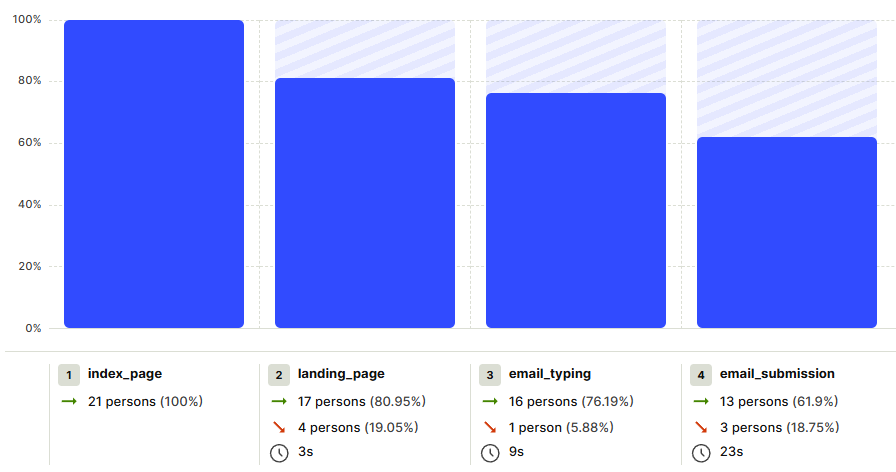

Configurare PostHog
Am integrat PostHog pe pagina principală, landing page și pagina de wireframe, ca să putem urmări clar cum interacționează oamenii cu LitBot. Am folosit:
- Web analytics: vizualizări de pagină și sesiuni
- Product analytics: urmărirea funnel-ului de conversie pentru înscrierea cu email
- Session replay: observarea comportamentului real al utilizatorilor și a tiparelor de navigare
Evenimente urmărite
Pentru a înțelege cum avansează utilizatorii prin pagina de înscriere, am urmărit câteva acțiuni-cheie. Ele ne arată cât de departe ajung oamenii, unde ezită și în ce punct renunță.
- Vizualizare pagină principală: Punctul de intrare inițial pentru toți utilizatorii.
- Vizualizare landing page: pagina cu mesajul principal și opțiunea de testare.
- Vizualizare pagină wireframe: Pasul opțional din mijlocul funnel-ului care prezintă prototipul UI.
- Tastare în câmpul de email: Indică intenția de a se înscrie.
- Interacțiune cu checkbox-ul newsletter: Măsoară implicarea și încrederea.
- Trimitere formular: Finalizarea flow-ului de conversie.

Funnel de conversie
Mai jos este funnel-ul care reprezintă cum se deplasează utilizatorii de la prima interacțiune către conversie.
Ne ajută să vedem atât nivelul de implicare, cât și punctele unde se pierde trafic.
- Vizită landing page: Intrarea în fluxul de lead generation.
- Interacțiune câmp email: Demonstrează intenție mai puternică de înscriere.
- Abonare newsletter: Arată interes suplimentar și disponibilitatea de a rămâne conectați.
- Trimitere formular: Finalizarea funnel-ului și conversie reușită.
